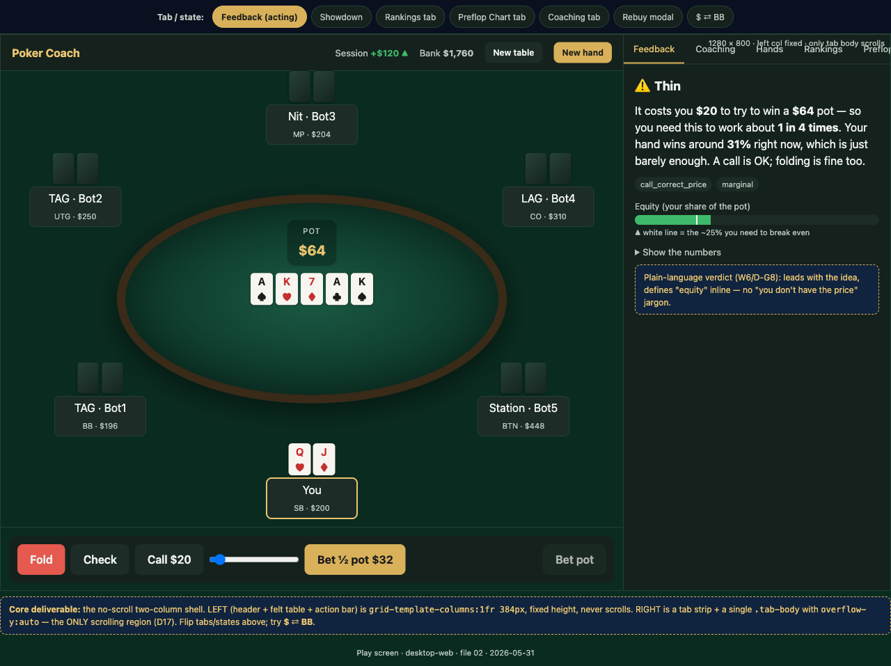
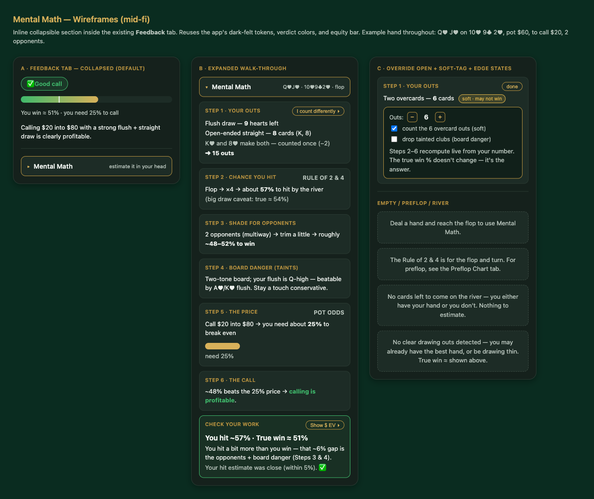

Building Poker Coach: how the product evolved, and how the AI pipeline shaped it
What this is
Poker Coach is a small browser app I built to get better at 6-max no-limit hold'em. You play hands against tunable bots and get plain-language feedback on each of your decisions; a separate coaching pass writes up your recurring mistakes. It runs entirely on my own machine — no accounts, no paid AI service.
This isn't a how-to for poker, and it isn't a release log. It's a look at how the product changed shape across its first four versions — the handful of decisions that actually redirected it — and how I used an AI-assisted development pipeline to get there. That pipeline is a sequence of Claude Code "skills": /requirements drafts the brief, /grill interrogates it, /spec and /plan turn it into a design and tasks, /execute writes the code, and /verify checks it before it merges. Where one of those steps changed an outcome, I've noted it.
v0.2The starting point: a play-and-learn loop
The first playable version wasn't trying to be clever. The brief was narrow and written as an outcome, not a feature list: a player who knows the rules but isn't a math person wants to improve by playing, with feedback that explains why a decision was good or bad in language they can follow. Solvers explain well but demand math fluency; trainers play hands but don't really teach. The gap was a loop that did both.
Two early decisions set the constraints everything later had to respect:
- The coaching brain lives outside the app. Narrative coaching runs in the terminal over saved hands, not as a live in-app AI call. That kept play fast and meant no embedded paid service — a deliberate non-goal ("not real-time mid-hand LLM coaching") rather than a thing left for later.
- Honesty over authority. Equity and verdicts are judged against a typical opponent range, never the bots' actual cards, and the app only calls something the "baseline" play in the one place it has a real chart to stand on. This started as a grill answer and became a rule the product never broke.
/spec as decision P8 — write an own hand evaluator and betting engine instead of pulling in a poker library — to keep the core pure and dependency-free. And /grill turned a vague "show equity" into the population-range honesty rule above before any code existed.v0.3Playing it exposed the real product
The MVP worked, and using it was where the actual problems showed up. Three of them mattered. The chips reset to the starting stack after every hand, so winning never felt like anything. At showdown it wasn't clear who'd won or what anyone had lost. And the feedback spoke in solver dialect — the line that stuck with me was the panel saying "You don't have the price to continue."
I didn't open a tidy spec. I wrote down the rough edges as I hit them and asked the pipeline to study the running app first and push back before scoping. The verbatim note that became the brief:
Most of the work in this round was narrowing. I'd floated a multi-table bankroll with banks per table; asked what the actual need was, it came down to a single persistent roll that survives a restart. The "explain the preflop chart to me" wish turned into a constraint I set myself — teach it interactively, in plain language, with no live AI call — so the explanation stays deterministic and works offline. And the jargon got rewritten:

/grill, a code check overturned my assumption that the saved-hand format already carried per-seat results — it didn't — which is why the bankroll went into a separate file instead of forcing a schema migration. And midway, the tooling claimed the spec was "corrupt"; instead of taking its recovery options I asked why, which exposed that nothing was corrupt — it had misread a display glitch and overwritten a good file. Asking "why" beat picking from the menu.v0.4A confusion turned into a feature
This one started as me not understanding my own product. The coach kept quoting equity numbers I couldn't reconstruct at the table, so I asked it to explain how to estimate them in my head — and then to write the explanation down and keep it current:
That produced docs/mental-equity-guide.md, a short living document. The useful part came next: the same file became the input to the build, passed in as context rather than re-described from memory.
As it got real, the scope tightened on its own. The "additional tab" became an inline section inside the existing feedback panel — the learning belongs next to the hand, not in a separate room. And "any situation" became "the live hand only," which dropped a whole manual card-picker I'd otherwise have had to build. The one design idea worth keeping: the guide's central point was that hitting your draw and winning the pot are different things, and rather than hide that, the feature shows your mental estimate next to the app's real equity so the gap between them is the thing you learn.

/verify earned its place here. Every unit test passed, but the review caught that the section had frozen on the first hand's snapshot — the live feature was silently dead until a browser check proved it updated street to street, and a regression test was added so it can't regress. The guide's worked example (a specific 15-out hand) became one of those tests, so the doc, the spec, and the code all check against the same number.v0.5Paying down the UX debt
By now the side panel had grown to five tabs and a few rough edges had accumulated. This round was maintenance, scoped tightly as UI-only — no engine, data, or bot changes. Five tabs collapsed to three (Live Feedback, Coaching, References), a duplicated hand-review panel under the table came out, and the coaching markdown finally inherited the app's typography instead of looking pasted in.
The most interesting fix was the smallest-seeming one. A "whose turn" glow was only ever lighting my own seat, never the bots'. The reason was structural: the bots resolve their actions instantly in the engine, while the table replays them one at a time, and the glow was being suppressed during that replay. The fix walks the glow seat-to-seat as each action is revealed. Worth noting honestly: one layout call here shipped stacked vertically even though the design step had recommended a toggle — a small inconsistency between what was decided and what got built.
/grill question forced the root-cause explanation of the glow before any fix was attempted, so the change addressed the cause (suppression during replay) rather than papering over the symptom. Small feature, but the same "find the cause first" discipline.nowWhere it's headed
The current work is incremental and player-driven — the kind of thing you only notice once you're using the product seriously. An all-in seat badge so you can see who's committed, alongside a fix to how short all-in stacks are credited from side pots. The shape of the change is telling: it came from playing, surfaced as a question ("how do both players win here?"), and turned into a small, well-tested addition rather than a redesign. The product has reached the stage where it improves by being used.
How the pipeline shaped the whole arc
Stepping back from the individual versions, a few patterns held across all of them:
| Step | What it actually did, repeatedly |
|---|---|
/grill | Turned vague wishes into rules and numbers before coding — the honesty-vs-range rule, the separate-file bankroll, the glow root cause. Its highest value was catching wrong assumptions with a quick code check. |
/requirements + /spec | Forced scope cuts to be written down as explicit non-goals (no live LLM coaching, no postflop solver, UI-only rounds), which kept later rounds from quietly re-opening them. |
/verify | Caught the bugs unit tests couldn't — most memorably a feature that passed every test but didn't work live until a browser check. |
| Plan-then-pause | I read the plan before any code was written, every round. Cheap insurance against building the wrong thing well. |
The through-line in the product itself is honesty: estimates labelled as estimates, "baseline" claimed only where there's a chart to back it, and — in the mental-math feature — the gap between a guess and the truth shown on purpose rather than smoothed over.
What I'd tell another PM
The thing that kept the product moving wasn't any single skill in the pipeline — it was being a real user of my own work and writing down the friction in the words I actually used. "Who talks like that?" and "how do both players win here?" were better briefs than anything I'd have written in planning mode. The pipeline's job was mostly to slow me down at the right moments: to make me cut scope out loud, to study the running thing before changing it, and to ask why before accepting that something was broken. None of that is specific to poker.
Generated by /playbook (pmos-learnkit) from my own Claude Code sessions and the repo's pipeline docs · Review REVIEW-BEFORE-SHARING.md before posting.